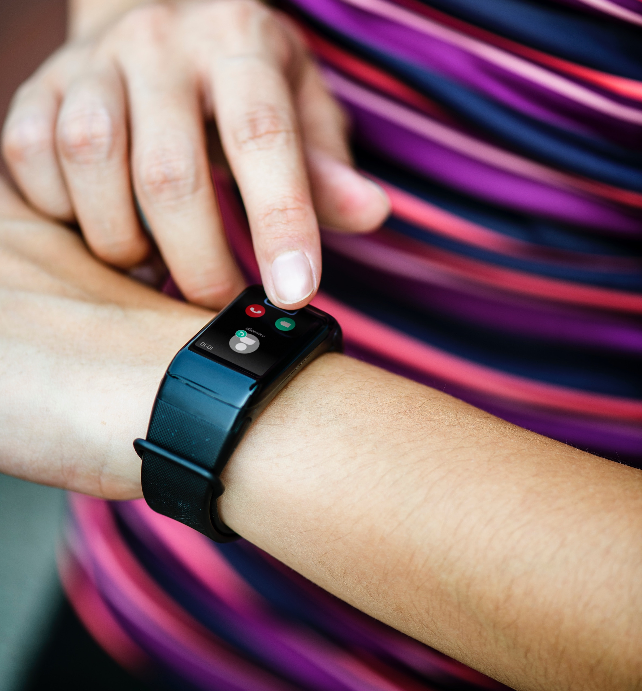

Wearables zijn alle apparaten, die op het lichaam gedragen worden. Dit kan zowel kleding als accessoires zijn. Ze bevatten vaak maar één functie, bijvoorbeeld om te sporten, communiceren of navigeren. Bij dit onderwerp zijn er twee cases aangeboden:
- Case 1. Social Interaction - Bedenk een nieuw interactief wearable concept dat gebaseerd is op de biometrische lichaamsgegevens van de mensen die zich in dezelfde kamer bevinden als jij.
- Case 2. Touch as a new way of communication - Bedenk een nieuw interactief wearable concept die de interactie stimuleert op basis van aanrakingsignalen tussen mensen.
Case 1
Een armband die de emoties van de andere mensen met hetzelfde armband laat zien. Deze personen moeten zich dan wel in dezelfde ruimte bevinden.
Een armband die laat zien hoe iemand zich voelt, een mood armband. De armband kan met verschillende mensen verbinden, als ze maar hetzelfde armband hebben en ze maximaal 8 meter van je af zijn. Wanneer iemand binnen deze 8 meter is, krijg je zijn icoontje op je armband te zien en wordt er gevraagd of je een connectie wilt maken. Alleen als dit door beide geaccepteerd wordt, kan er iets verstuurd worden naar de ander. Wanneer iemand buiten de 8 meter is, valt de verbinding weg en verdwijnt zijn icoontje van je armband.
Dit icoontje laat zien hoe diegene met de armband zich voelt, door middel van kleuren. Als bijvoorbeeld eentje rood is, dan weet je dat diegene van wie dit icoontje is, op dat moment boos is. Zijn armband zal dan ook rood branden. Om diegene te kalmeren, kan je verschillende dingen naar hem sturen bijvoorbeeld tekst of een geanimeerde sticker/emoij. Dit doe je dan door datgene wat je wilt sturen, te swipen naar zijn icoontje. Het armbandje gaat dan trillen om aan te geven dat er iets binnen is gekomen.
Om de armbanden met elkaar te verbinden en om dingen naar elkaar te kunnen sturen wordt bluethooth gebruikt. Zo doe je je bluetooth aan en elke keer als iemand in de buurt is verschijnt degene op je armband en kun je ervoor kiezen om het te accepteren of niet. Ook zit er in de armband nog een temperatuursensor, die het lichaamstemperatuur meet om zo erachter te komen hoe iemand zich voelt. Bij een bepaalde lichaamstemperatuur verandert dan vervolgen de kleur. Verder zit er ook een tril sensor bij die ervoor zorgt dat de armband gaat trillen als er iets binnenkomt van een ander armband.

Reflectie
Ik had aan het aan het begin niet zo een duidelijk beeld van wat wearable precies inhield. Ik snapte wel dat het iets was wat je kon dragen en het eerste waar ik toen aan dacht waren de smartwatches en VR brillen, maar dat was het. Pas na de hoorcollege zag ik dat het op veel meer andere manieren toegepast kon worden, bijvoorbeeld in kleding en zelfs in je lichaam. Dit was dan ook waarom dit onderwerp me zo erg aansprak. Het bleek uiteindelijk veel breder te zijn dan verwacht, waardoor ik erg nieuwsgierig werd naar wat er nog meer mogelijk was. Ik denk dat er in de toekomst in bijna elk kledingstuk wel iets komt dat ervoor zorgt dat je makkelijk verbinding blijft houden met je telefoon, net als de smartwatches, die laten weten wanneer je een bericht hebt, zal dit toegepast worden in je kleding. Ook zul je steeds minder dingen op zak hebben omdat alles dan al aan je zit. Je pinpas (alle andere kaarten), id etc. zul je dan altijd bij je hebben.